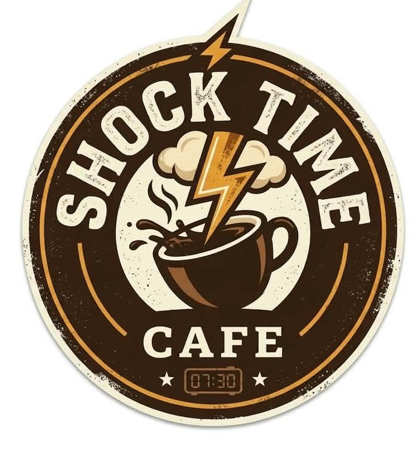
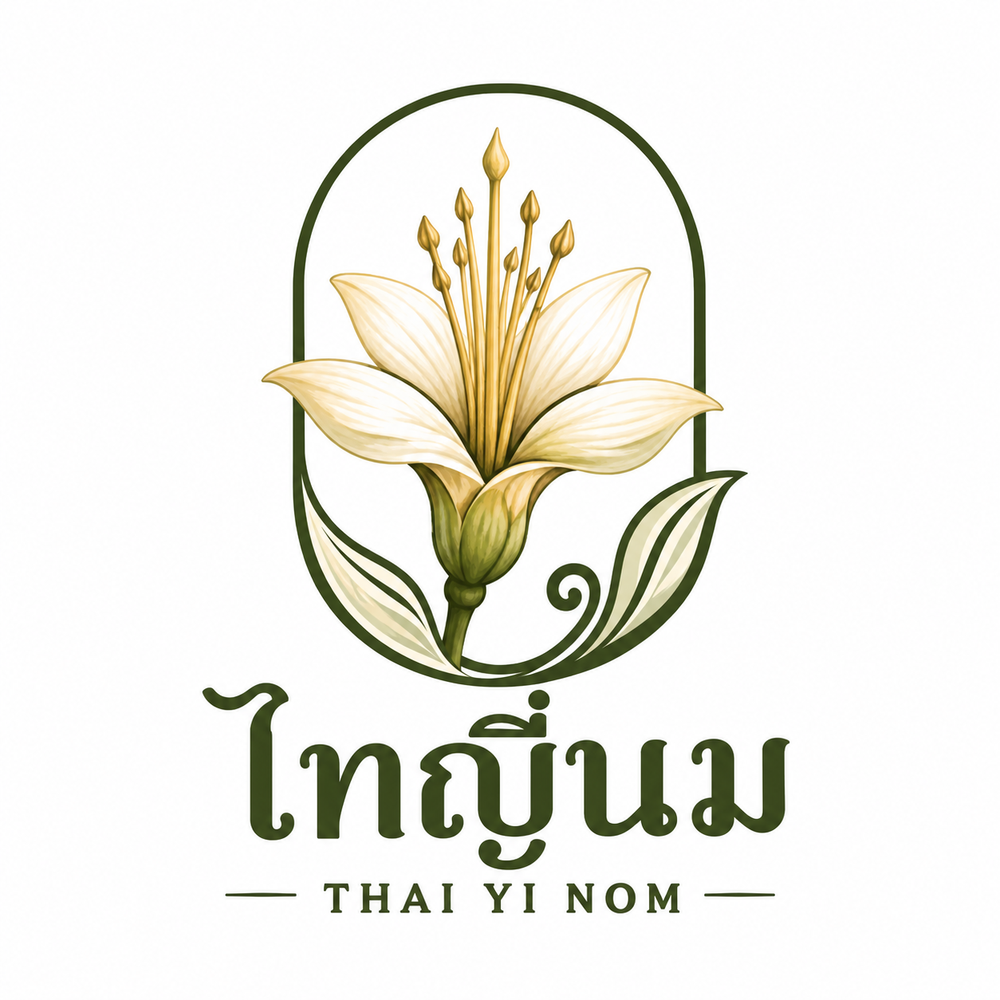
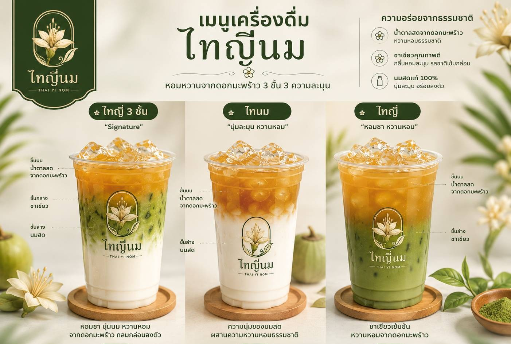
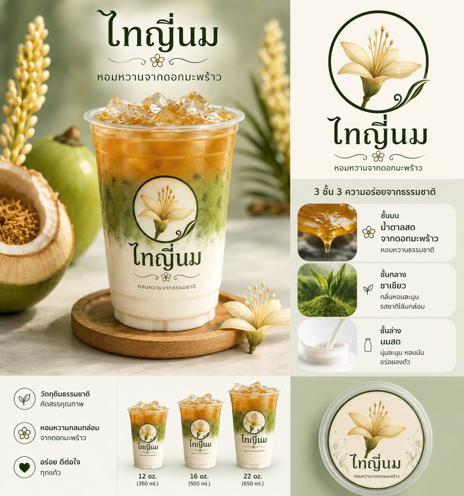

โปสเตอร์โปรโมตสินค้า



THAI YI NOM · หอมหวานจากดอกมะพร้าว
นำเสนอโดย นางสาว ณิชาภัทร ตีรพัฒนพันธุ์
โอกาสทางธุรกิจ
ช่วยขับเน้นและดึงดูดผู้บริโภคให้มีความสนใจในโพดั่กชั่รจากวัตถุดิบที่มาจากท้องถิ่นและเรื่องราวเบื้องหลังสินค้ามากขึ้น
กระแสมัทฉะแท้นั้นยังเติบโตต่อเนื่อง แต่ตลาดยังขาดสินค้าที่มีอัตลักษณ์ชัดเจน
วัตถุดิบท้องถิ่นที่แบรนด์คู่แข่งยังไม่ได้ใช้เป็นจุดขายหลัก
ภาพ 3 ชั้นสวยงาม ถ่ายรูปลงคอนเทนต์ได้ทันที ช่วยประหยัดงบการตลาด

แนวคิดสินค้า

ความหวานหอมจากธรรมชาติ
กลิ่นหอมเข้ม รสชาติเข้มข้น ขนปลายลิ้นเล็กๆตัดกับรสของน้ำตาลดอกมะพรัาว
เนื้อสัมผัสนุ่มละมุน กลมกล่อม หวานแบบเบาๆจากธรรมชาติของรสนมและเท็กเจอร์ความครีมมี่ตัดกับรสหนักของชาและหวานแหลใของน้ำตาล
THREE LAYERS ONE IDENTITY By ShockTime-The thaiyi production
แบรนด์และโพซิชันนิ่ง
ไม่ใช่จุดยืนที่เราต้องการสื่อสาร
โพซิชันที่แบรนด์ยึดถือ — เฉพาะตัว จดจำง่าย
เห็น 3 ชั้น → นึกถึงไทญี่นม
ไม่ใช่ผงชาสังเคราะห์
อัตลักษณ์ท้องถิ่นสมุทรสงคราม
ภาพจำที่เลียนแบบยาก
เมนูและราคา
This is a first season manu FORM ShockTime Cafe
โครงสร้างต้นทุน
ประมาณการยอดขายขสมมุติ
ประมาณการรายเดือน (เปิด 26 วัน)
ยอดขาย / วัน
4,400 บาทต้นทุน / วัน
≈ 2,370 บาทกำไรขั้นต้น / วัน
≈ 2,030 บาทกำไรขั้นต้น / เดือน
≈ 52,770 บาท* ยังไม่หักค่าเช่า ค่าแรง ค่าไฟ ค่า Delivery และการตลาด
การวิเคราะห์
แผนการตลาด
ช่วงแรกเริ่มจากการฝากขายตามหน้าร้านเป็นหลัก
คอนเทนต์โชว์การเทน้ำตาลมะพร้าวลงแก้ว 3 ชั้น — จุดขายที่ถ่ายแล้วปัง
วัยทำงานและนักศึกษาที่ชอบเครื่องดื่มพรีเมียมและของ Local
จับมือร้านค้า/ธุรกิจในพื้นที่ และกลุ่มนักท่องเที่ยวสาย Local
แผนการเงินเบื้องต้น
จุดคุ้มทุน (แก้ว/เดือน) = ต้นทุนคงที่ต่อเดือน ÷ กำไรขั้นต้นต่อแก้ว (25.37 บาท)
นมสด = ความละมุน • มัทฉะ = ความหอมเข้ม • น้ำตาลมะพร้าว = ความหวานหอมจากท้องถิ่น
ขอบคุณที่รับฟัง

หน้าที่: เขียนโค้ด/ออกแบบโลโก้

หน้าที่:ตกแต่งสไลด์/แก้โค้ด

หน้าที่: หาข้อมูล/คำนวณต่างๆ

หน้าที่: หารูป/หาแหล่งที่มา

หน้าที่: เขียนแผนงาน/ออกแบบแผนงาน